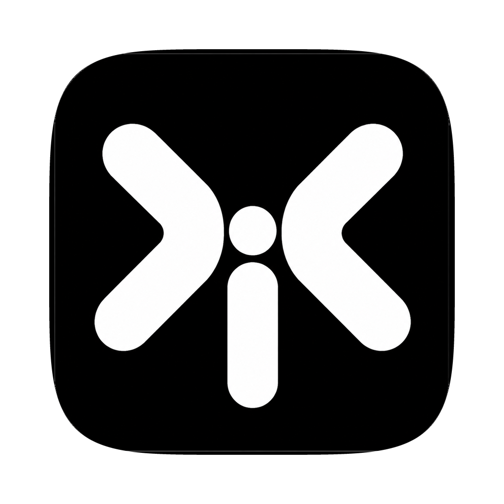

Live badges as your agents type
Every file an agent touches lights up the moment it hits disk. The whole tree reacts in real time, so you always know exactly what's being rewritten, and where.

teebeNative macOS · git worktree GUI
teebe is a native macOS git worktree manager for Claude Code, Codex and Cursor. See which worktrees an agent is still working in, which have uncommitted changes and which are merged, then clean up the done ones safely, right beside your terminal.
curl -fsSL https://teebe.io/install.sh | bash
Free and open source today · macOS 14+ · Apple Silicon · auto-updates via Sparkle.
Terminal agents are the fastest way to ship with AI. They're also a black box: the agent
says "done", and you're left tabbing between git status and your editor to
find out what "done" actually means across five worktrees. teebe fixes exactly that.
Every worktree gets one mark and a full file tree in a small native window beside your
terminal: watch files light up as agents edit them, peek any diff with one keystroke, and
see at a glance which worktrees are still live and which are merged. It doesn't run your
agents or edit your code. It tells you which worktrees are done, and cleans up the done
ones safely. Keep your setup.
Space peek the diff · click a file to switch
See the state of every worktree, watch files change, peek diffs and clean up, including the worktrees your agents create, without opening an IDE or leaving your flow.
Every file an agent touches lights up the moment it hits disk. The whole tree reacts in real time, so you always know exactly what's being rewritten, and where.
Select a changed file and hit Space for a side-by-side git diff, right there. Review what an agent actually did without opening an editor or switching apps.
One mark per worktree: an orb while an agent works, an orange dot for uncommitted changes, a ring until it's merged, a green check when it's safe to delete. Squash merges count.
Remove every merged worktree, and its branch, after a confirmation that lists each one. Worktrees with uncommitted work or an unfinished rebase are never offered, and commits only a removed worktree could reach are kept for 90 days.
The worktrees your agents create show up on their own. Make new ones from the New Worktree sheet, and get a notification when an agent finishes a turn.
Global defaults for your terminal (Terminal or cmux), how files open, the comparison branch and where new worktrees go. Override any of them per project.
A real Mac app in Swift, not an Electron wrapper, translucent in light and dark. It reads git locally and your code never leaves your machine.
What teebe is, what it isn't, and how it fits beside your agents.
Because the terminal is great for running agents and poor at showing you files and state. With a window per project spread across your monitors, it gets hard to tell which worktree an agent is still working in, which one has uncommitted changes, and which one is merged and can go. teebe sits beside your terminal and shows all of that at a glance, with a live file tree and inline diffs when you need to look closer. There's a walkthrough in see what Claude Code changed, live.
Every worktree in teebe shows one mark. An animated orb means a coding agent is working in it. An orange dot means it has uncommitted changes. A ring means its commits are not merged yet. A green check means it is merged and safe to delete. Hover any mark for a short card that explains it, and group your worktrees by state to see Uncommitted changes, Not merged and Safe to delete as separate lists.
teebe checks every worktree against your default branch plus dev, develop, main and master, and one extra comparison branch you can choose in Settings. Squash merges and branches merged commit by commit both count as merged. A brand new branch with no commits of its own never does. With background fetch on, the result stays current with your remote.
teebe is built so it doesn't. A worktree is only offered for removal when it is merged and clean, and teebe checks everything again right before it removes anything. It never offers a worktree with uncommitted changes, an unfinished rebase or merge, a lock, or ignored files that hold a nested repository with unpushed commits. The confirmation lists every worktree and says how many ignored files will be deleted. Commits that only the removed worktree could still reach are kept under a hidden backup ref for 90 days, so you can bring them back with git branch.
Yes. teebe watches each repo's git metadata, so a worktree created by claude --worktree (under .claude/worktrees/), by the Codex app (under $CODEX_HOME/worktrees), by Cursor's parallel agents, or by a plain git worktree add shows up the moment it exists and disappears when it's removed. You can also create worktrees from teebe with the New Worktree sheet: pick a new or existing branch, its starting point and where the folder goes. See Claude Code worktrees, explained and Codex worktrees.
All of them. File badges, diffs and merge status come from the filesystem and git, so any terminal agent works. teebe also knows when Claude Code or Codex is working or waiting for you in a worktree and shows it with the orb, and it can notify you when a turn finishes. Without any agents it's still a fast, native worktree manager.
Yes. Settings has switches for completion notifications and their sound, plus a Test Notification button. For Claude Code, an optional hook lets teebe notice the end of a turn even while it sits in the background; Settings shows whether it's installed and leaves your other hook settings untouched. Notifications are off by default for new installs, and stay on if you already had them.
No. teebe never edits the contents of your files and never starts or controls an agent. It does run the git actions you ask for: creating and removing worktrees, deleting a merged branch, and staging, unstaging or discarding changes, with a confirmation before anything destructive. Files open in the editor you already use.
With Fetch automatically on (the default), teebe runs a quiet git fetch from origin when you return to the app or select a project, at most once every five minutes, so sync arrows and merge status stay current. These background fetches run without your SSH agent, so 1Password, Secretive and similar agents never pop up an approval prompt on their own. Refresh fetches right away and does use your agent. You can turn background fetch off in Settings.
Yes. Settings holds your defaults: which terminal opens a worktree (Terminal or cmux), how files open, the extra comparison branch and where new worktrees go. Change any of them inside a project and the change applies to that project only, until you return it to the defaults. Appearance follows the system or can be set to Light or Dark.
Orchestrators run your agents for you. Git clients handle commits, rebases and conflicts. teebe does neither. It's the layer beside your terminal that shows what every agent changed, tells you which worktrees are merged, and cleans up the ones that are done. Use it alongside an orchestrator or on its own. The git worktree GUI comparison covers the alternatives.
No. teebe reads your files and git locally on your Mac, and there is no teebe backend and no in-app analytics. The network traffic it causes is git fetch to your own remotes (which you can turn off) and the Sparkle update check against teebe.io (which you can also turn off). See the privacy page for details.
Yes. teebe is free and open source today, under GPL-3.0, and needs no account. The code is on GitHub, and installs come from GitHub Releases with automatic updates.
macOS 14 or newer on Apple Silicon. Run curl -fsSL https://teebe.io/install.sh | bash in your terminal: it installs teebe into Applications and opens it without a Gatekeeper prompt. If you download the .dmg from GitHub Releases instead, macOS blocks the first launch until you allow it in System Settings, under Privacy & Security, because teebe is not notarized yet. Updates arrive automatically after that.
Native macOS git worktree GUI · free and open source today · macOS 14+ on Apple Silicon.
curl -fsSL https://teebe.io/install.sh | bash